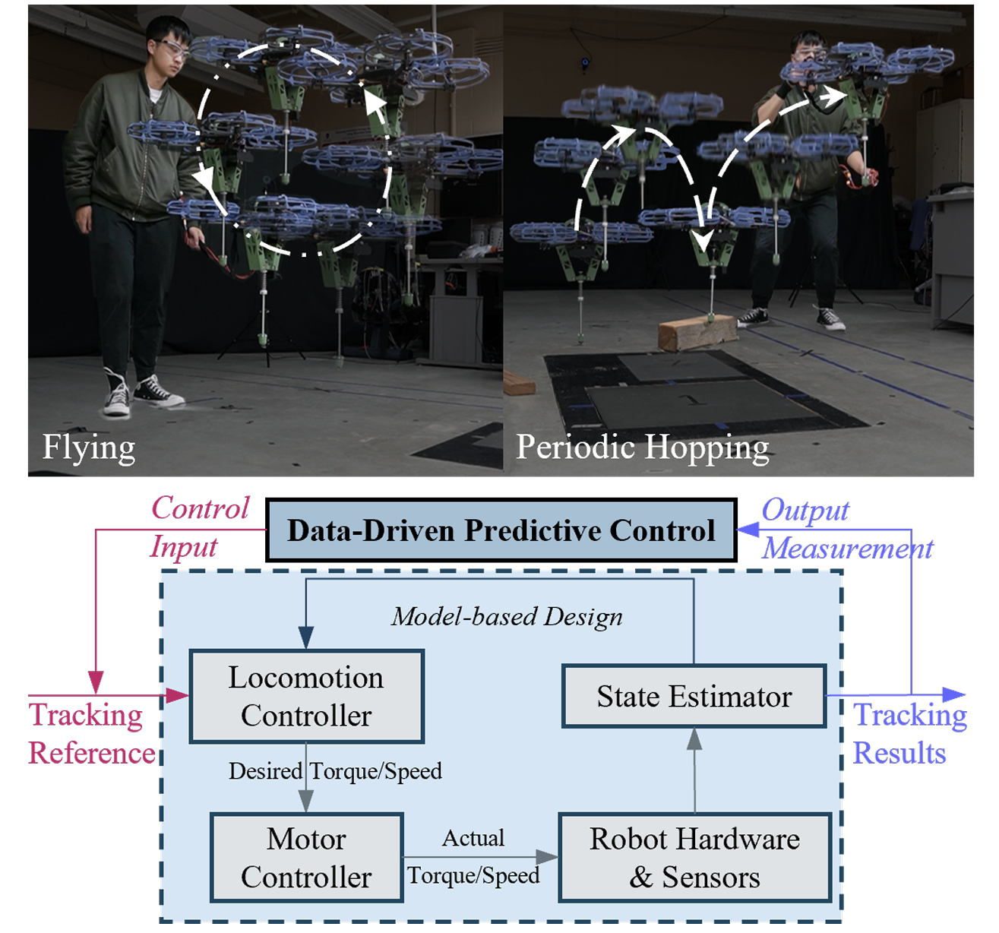
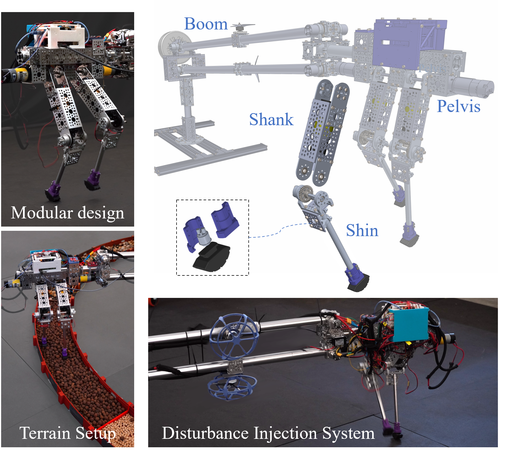
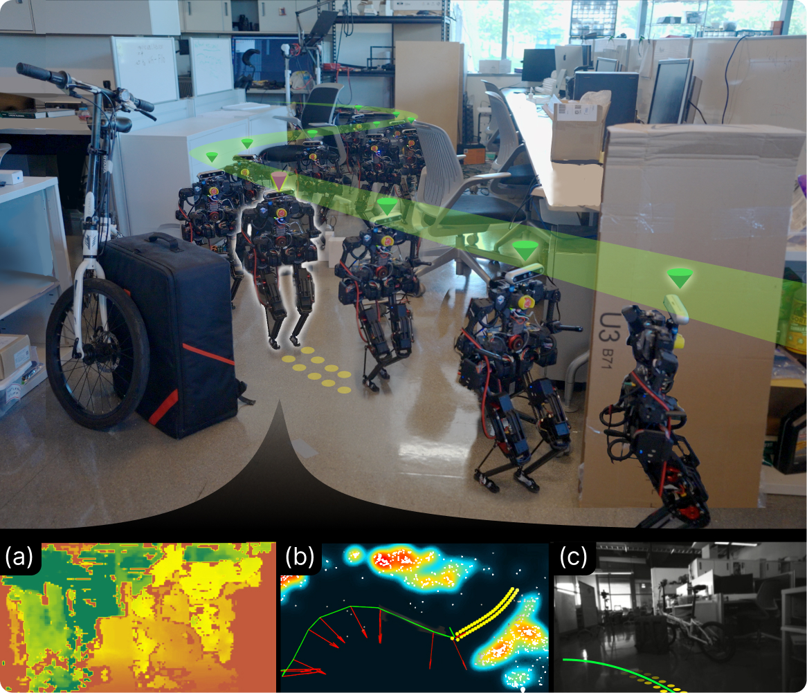
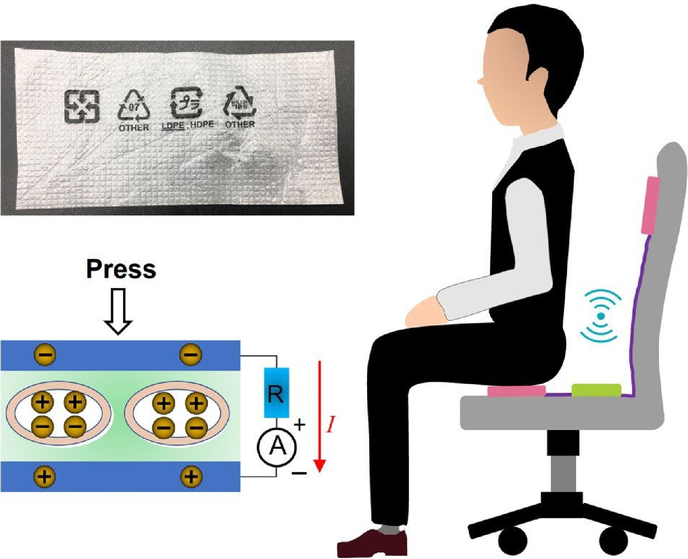

|
Yuhao Huang
I'm a second-year PhD student in Mechanical Engineering and Materials Science at Duke University, specializing in robotics under the supervision of Prof. Boyuan Chen. I hold an M.S. in Mechanical Engineering from the University of Wisconsin–Madison and a B.S. in Electromechanical Engineering from the University of Macau.
Email /
CV /
Scholar /
Github
|
|
Research
My research focuses on both model-based and learning-based methods with emphasis on locomotion, loco-manipulation and mobile manipulation. At the Wisconsin Expedious LeggedAI (WELL) Lab with Prof. Xiaobin Xiong, I applied nonlinear and data-driven control theory to synthesize robust locomotion behaviors. Previously, at the Soft Sensors-Actuators-Robots Lab under Prof. Junwen Zhong, I developed novel self-powered piezoelectret sensor technologies for industrial applications. Beyond research, I enjoy calligraphy, basketball, and mindfulness practices.
|
Selected Publications
|

|
Reference-Steering via Data-Driven Predictive Control for Hyper-Accurate Robotic Flying-Hopping Locomotion
Yicheng Zeng*, Yuhao Huang*, Xiaobin Xiong
IEEE/RSJ International Conference on Intelligent Robots and Systems (IROS), 2025
project page /
arXiv /
video
* Equal contribution.
Data-driven predictive control adjusts reference trajectories to reduce the gap between model predictions and hardware behavior, improving flying and hopping accuracy on PogoX.
|
|

|
STRIDE: An Open-Source, Low-Cost, and Versatile Bipedal Robot Platform for Research and Education
Yuhao Huang, Yicheng Zeng, Xiaobin Xiong
IEEE-RAS International Conference on Humanoid Robots (Humanoids), 2024
project page /
arXiv /
code /
video
A low-cost, modular bipedal platform combines reconfigurable terrain and controlled disturbances to support research and education in robot design and robust locomotion control.
|
Other Publications
|

|
iWalker: Imperative Visual Planning for Walking Humanoid Robot
Xiao Lin, Yuhao Huang, Taimeng Fu, Xiaobin Xiong, Chen Wang
IEEE/RSJ International Conference on Intelligent Robots and Systems (IROS), 2025
project page /
arXiv /
video
Imperative learning connects visual navigation, footstep planning, and whole-body balancing for autonomous humanoid walking, with validation in simulation and on the BRUCE robot.
|
|

|
A self-powered piezoelectret sensor based on foamed plastic garbage for monitoring human motions
Yujun Shi, Kaijun Zhang, Sen Ding, Zhaoyang Li, Yuhao Huang, Yucong Pi, Dazhe Zhao, Yaowen Zhang, Renkun Wang, Binpu Zhou, Zhi-Xin Yang, Junwen Zhong
Nano Research, 16(1), 1269–1276, 2023
paper /
publisher page & supplementary materials
Repurposed foamed plastic becomes a flexible, self-powered pressure sensor for pulse detection and wireless sitting-posture monitoring with a smart chair.
|
|
{kind=link}